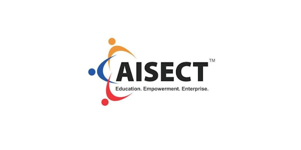
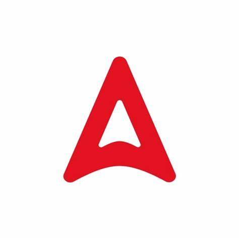
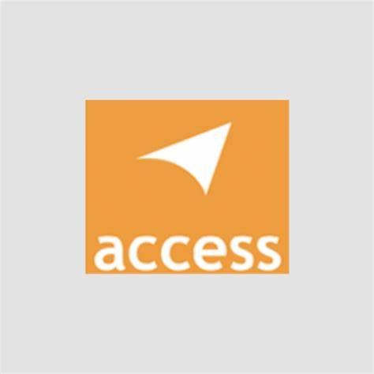
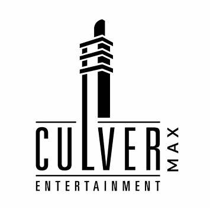
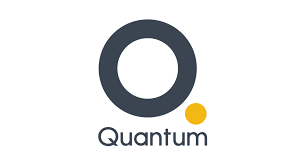
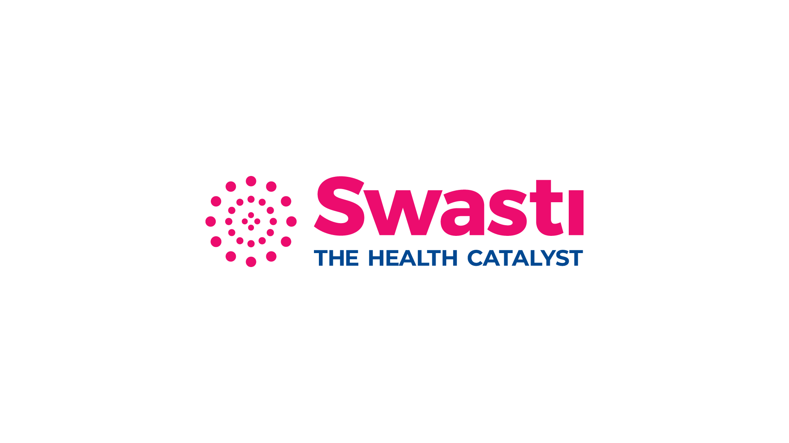
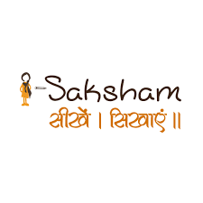
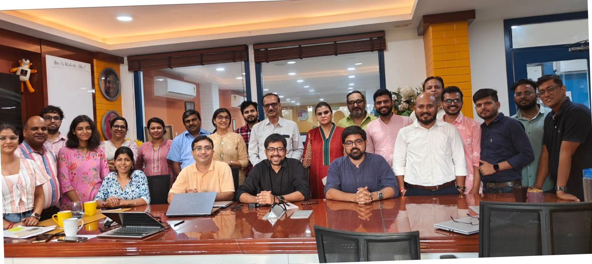
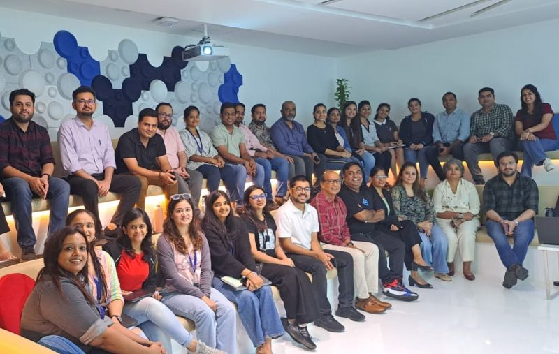
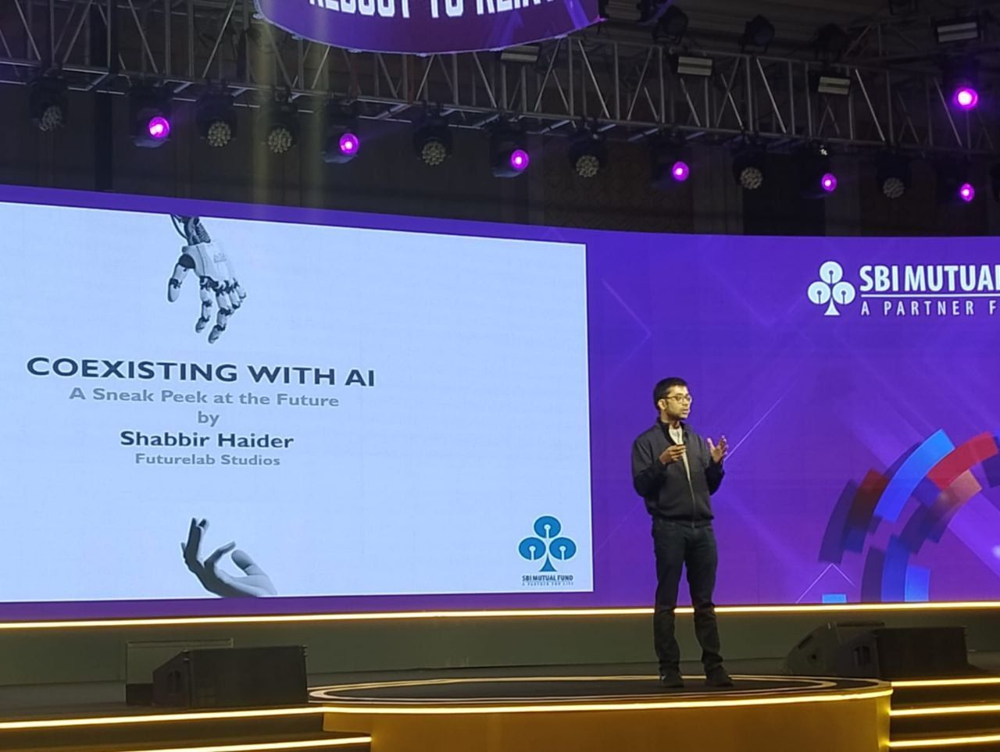

AISECTSelected proof points
Futurelab in practice, from logos to live workshop rooms.
This page gathers customer logos and workshop moments from Futurelab Studios' website to support the Sattva proposal with visible proof of delivery across sectors and formats.
What this means for Sattva
Futurelab's profile is not limited to one style of engagement. The same team works across AI training, hands-on workshops, custom tooling, and advisory, so Sattva can use this program both for capability building and to identify the next layer of implementation opportunities.
Customer logos
Selected organizations featured on Futurelab's website.
A sample of the customers and collaborators Futurelab showcases publicly across impact, education, consumer, media, and adjacent sectors.

Adda247
Access Development Services
Culver Max Entertainment
Quantum Consumer Solutions
Swasti
i-SakshamWorkshop moments
Snapshots of Futurelab-led sessions and client engagements.
These images are useful as a visual cue for how Futurelab shows up in live rooms: practical, team-based, and grounded in real conversation.

Access Development Services
Workshop setting in New Delhi.

Culver Max Entertainment
Team workshop session captured on site.

SBI Mutual Fund
Annual event workshop moment from Kolkata.
Training
Capability building that sticks
Futurelab's workshop work is strongest when it helps teams apply AI inside familiar workflows instead of asking them to change everything at once.
Execution
Strategy paired with practical build thinking
Because the team also works on custom AI tools and CTO advisory, workshops can naturally lead into implementation conversations where needed.
For Sattva
A credible partner for both literacy and next steps
The proposed Sattva program is built to create immediate team confidence while also surfacing stronger, more strategic AI opportunities over time.